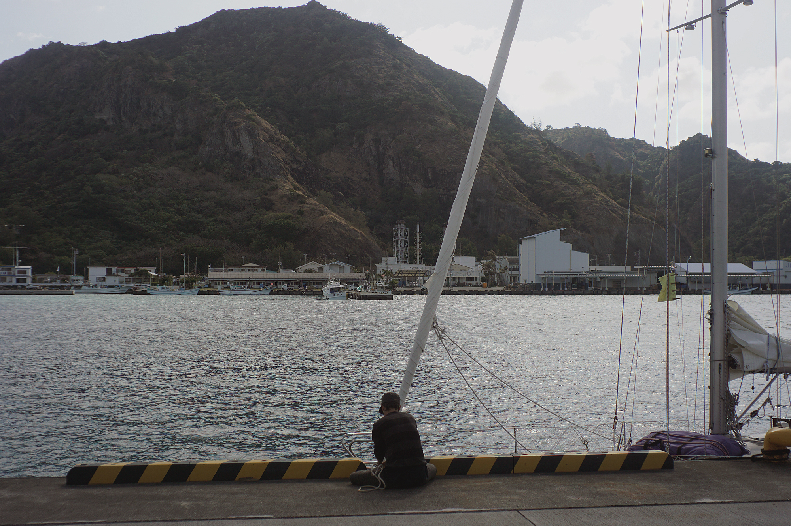
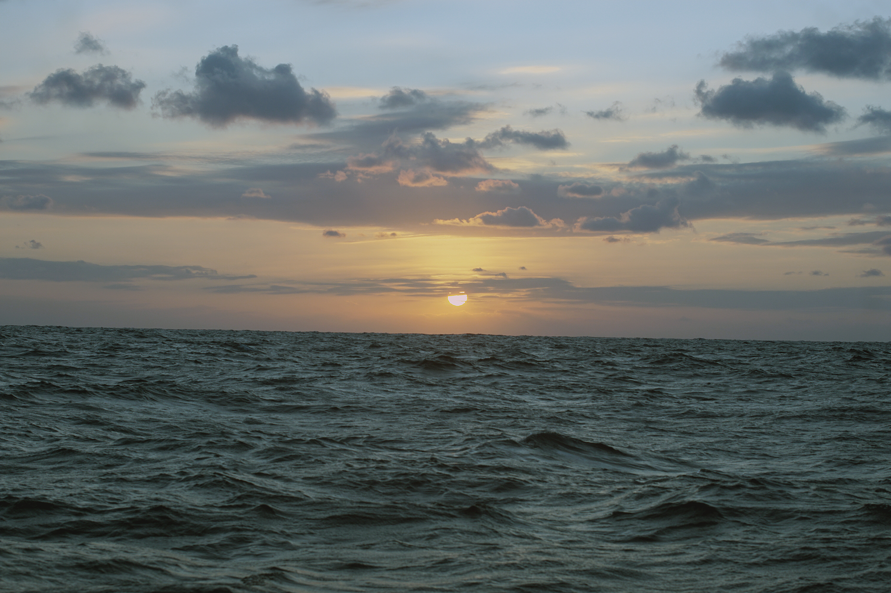
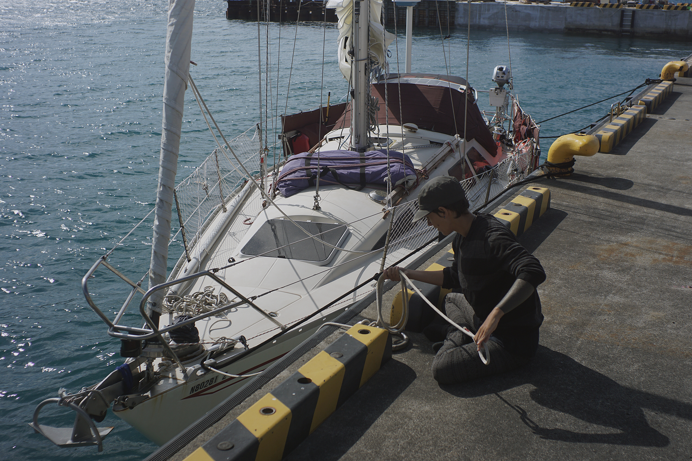
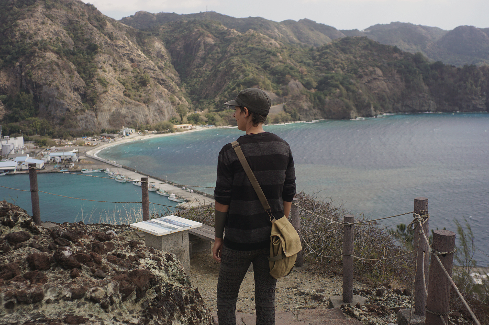
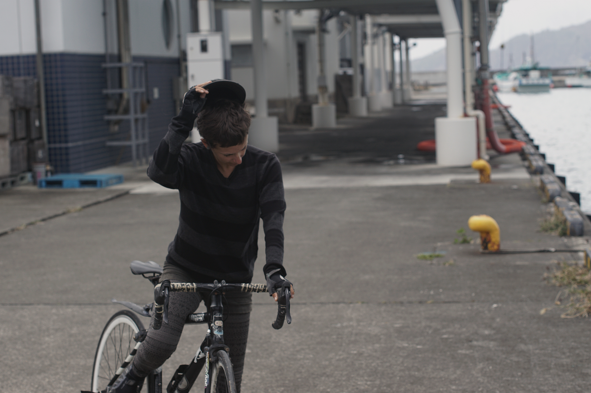
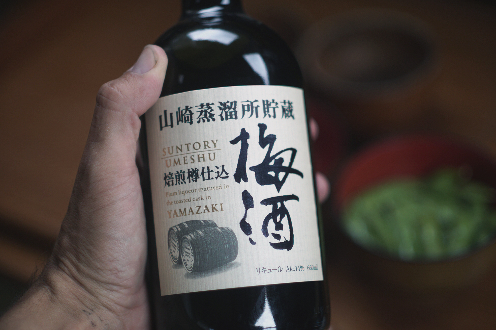
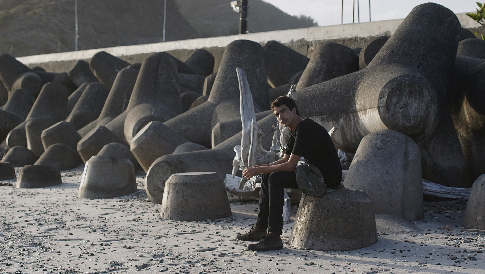

Goji no chaimu
Arriving in chichijima
After a long 21-day passage, seeing the shape of the island of Chichijima in the distance was unreal; this was our prize, our first step onto Japanese soil. We used to make many trips to Japan by plane, but getting there by our own efforts — by sailboat — is a lot slower and harder. If we had stuck to our plan of sailing there via Hawaii, we would have been there sooner, but I’m glad we took the long route. We passed through 9 countries, learned a lot about the world and, through it all, we've surpassed ourselves.

During that time, we often talked about what it would be like to arrive in Japan, about what would happen when we did. You have to remember that this was a big deal for us, a milestone in our lives and the culmination of 3 years of hard work. A fantasy made real is a hell of an achievement. A part of me couldn’t believe we’d made it — anytime now I’d wake up mid-ocean in transit in the South Pacific. Even when I’d have my feet planted on the ground, with a Japanese flag flying above my head, I knew I’d be anxious, waiting for something horrible to happen that would rob us of our victory.
"They’ll turn us away.", "We’ve landed on the wrong island." or "We died in the pacific some months ago, and this is limbo."
My eyes were set on the phantasmic island ahead. The sun fell out of the sky then, drawing down a star-studded curtain; the wind blew itself out, leaving the sea to settle into an unmoving and creepy oil slick.
- "This really is limbo."
A bright circle appeared on the horizon then. It isn’t the first or the last time that I mistake the moonrise for a ship, or the bright eye of some mythological beast.
At this point, it looked like we’d be entering Futami port at night, but at least we had the eye of Sauron to light the way. The island in the distance stopped being a vague black patch, and we began to see details in it. As Pino passed the first set of buoys, lights and buildings came into view. I stood at the bow with a flashlight to illuminate any coming threats, and to warn others of our arrival because at this point our red and green lights weren’t working. Pino bucked hard on this trip, bow diving deep — we blame this for the breakage.
The famous ferry, Ogasawara Maru, sat idly at the dock; the giant was sleeping, and we glided past it in silence, undetected. We pushed into the main fishing harbor, and as promised, all was clearly marked and visible in the night. Our docking space was unoccupied, but there was one problem... the wall we had to moor onto stood a lot higher than I could jump. I stared, wide-eyed, docking line in hand.
- “I don’t think I can make that.”
- “Sure you can!”
Devine said, with blind confidence.
- "You’ve seen my legs! Not much spring in these stumps! Um. Maybe if I stand on the pulpit…”
Pino was approaching the dock slowly. I wondered if I could lasso the bollards. I’ve never done that and had no reason to believe it could work, but my mind raced on — what else could I do? My brain had no filter and conjured up many options that it knew would be impossible for this body of mine to perform; maybe I could put a foot on the lifelines, or swing off a halyard ‘a-la-tarzan’… Hell, maybe I could grow wings. Before I could decide, I heard Devine’s voice.
- “There’s a ladder!”
My jumping skills would go untested.
I secured Pino to the pier. During this precarious operation no one fell into the water or smashed a knee into a winch; even our toes suffered no damage — a rarity aboard Pino. We’ve harmed our toes so often that they’ve threatened to atrophy.
A coastguard official was there to greet us.
- "You must stay on boat" he said to us, in broken english.
We apologized, climbing back on Pino island. The official told us that they would clear us in tomorrow morning at 8:30 am — perfect. It was 9pm then, meaning we’d have time to relax and clean up our mess of a home. We slept very well that night, as we tend to do after a long passage, our brains longing for more than 3 consecutive hours of sleep.

The next morning, the officials stood on the dock, ready to push papers at us. There was about 5 or 6 of them, I feared everyone would try to come aboard at once but instead they boarded us in pairs, taking turns.
Quarantine asked if we had any plants, I said no, showing them the last bit of fresh food we had aboard: a dry and wrinkly knob of ginger. We signed our names many times, and used our very best Japanese. We could understand most of what they said, but the official papers had many kanji; the thought of trying to translate it all made me hot in the head. At least we wouldn’t have to — many of the documents had English and the ones that didn’t were permits and I was confident I already knew what was written on them, which is enough, really. Customs came aboard next, asking us for the purpose of our visit.
- “Tabemono.” (food)
He smiled at this.
For immigration, we had to step off Pino and visit their office in town. There, they had the same devices that are present in airports to check you in, the ones that take your photo and a scan of your index fingers. We filled a card that is given out on planes, except that instead of flight number we wrote “Pino”. This amused us. Welcome aboard airship Pino!

When we stepped into a Japanese konbini (convenience store), it’s then that I started to get excited! When I first sampled karashi, or drank a cold yebisu, everything around me became less translucent, we had eaten the food of that world and like Chihiro we lost our human scent and became creatures of Chichijima. This place wasn’t some cruel hallucination — it was real!
We soon picked up our old habits, making food the way we used to in Tokyo and eating the same snacks. It felt like we’d returned to a state of normality, like we’d never left and that the whole sailboat thing was a dream. A quick look around dispelled that reverie, a Japanese way to describe this feeling is:
- 夢擬き(yume modoki)
It’s dream-like, but isn’t one.
- この生活は、夢擬きだね。

Chichijima isn’t a big place, and, unlike Tokyo, here the clock runs slow. There is no real rush to do anything. Stores close at regular hours, at 5pm konbinis and groceries are shut — it is a healthy way to live. There are only 2,500 people on this island, and most live near here in Omura, Okumura, Kiyose and Miyanohama. There are other towns further away, to the south east of the bay: Sakaiura, Ougiura, Komagari and Kominato.

There are few stores and businesses. For locals it can get expensive to live here, the rent is high and not much is sold on the island. If you want clothes, furniture, electronics… these have to be imported from the mainland. There is no plane service here either — if people want to visit, or if they want to order goods from mainland Japan, it needs to come by ship (via Ogasawara Maru). The arrival of the ferry – which comes every 2 to 3 days – is a big deal for the town, not just because it means they’re getting their packages, but also because there is fresh foods and because it brings tourists to the island. On the day the ship arrives, boxes of fresh food are piled up high in front of the grocery stores, and employees are busy placing them on the shelves while the local people are filling their baskets. Two days after the stores are replenished, there are much fewer items available, the locals have raided the produce section and robbed it of all color.
The people of Chichijima rely heavily on tourism for money — the locals give dive tours, walking tours, operate restaurants or souvenir shops. All business depends on the visitors. Because we stayed here 3 weeks, we saw the ship coming and going many times and we noticed that some shops would close the day before, and after the ship leaves. The town and Ogasawara Maru share a schedule. If you don’t know it, it can be confusing, but at least it’s easy to know if the ship is here or not, because it is a behemoth and you can see it from away, and because the streets are full of people with windbreakers and bucket hats. When the ship leaves, the town makes a show of it — locals gather at the pier, waving, while others bang on taiko drums. When the ship sails out, dive and tour boats escort it to the entrance to the harbor, the people on it waving and yelling "Itterasshai!" (see you later.) Devine & I were witness to these elaborate festivities once. We stood at the pier too as Ogasawara Maru left; waving, as if we too lived here. The people here value visitors, and giving them a memorable send off is important.
We met many locals on the island. Having a yacht is a conversation starter, it’s like having a baby, a dog or some weird pet; we like to think Pino fits in that last category.
- え！ヨットすごい！(Wow, nice yacht!)
- いえ、大きなペリーカンだよ。(No, that’s a giant pelican.)
Many people would come by, see our boat and say hello, asking where we’re from and why we have Japanese writing on our boat.
- “Otaku desu.”
We would say, shamelessly.

We made a few friends on the island, and because of our conversations, we learned a lot about Chichijima. Many here have multiple jobs, odd jobs you can say. We met one person who was in charge of servicing and replenishing vending machines on the island. His other job was loading and unloading supplies from the ferry. Another person, our dear friend Bariton, repairs bicycles, volunteers at a garden and works at the town’s visitor center. We had a really amazing time with Bariton and his wife Chie. They graciously invited us into their home, where we shared stories, and had a tasting of their homemade miso. On another occasion, they invited us over for dinner and served vegetable tempura and homemade azuki with yakimochi. I think the reason they served us this, was because Bariton came on the boat once and saw an empty can of tsubuan from the store.
- “They put a lot of sugar in that.”
The dessert Chie made was amazing and its canned equivalent pales in comparison, the taste is subtle and the sugar content is much lower – homemade is best. On March 3rd is Hinamatsuri (girl's day), Bariton showed up that morning with a plate of sakura mochi, pink rice cakes that are wrapped in a pickled shiso leaf, and stuffed with sweet red beans. Another local came by too, with two little dolls (雛人形 "hina-ningyou"), to make sure we could take part in the festivities that day – so nice of them.
Before we arrived, we were looking forward to being in a place where we could cycle again, to have a foot on land. When at anchor bringing our bikes ashore with the dinghy is always difficult, and even then, the roads in some of the places we'd been were less than ideal. But here, in Japan, the streets are clean and immaculate. Biking in Chichijima was especially great because there aren’t many cars here — the ferry can’t accommodate them and so the roads are not very busy. We went for many joyrides, exploring the island on two wheels. Ah, how we missed this! This place is very mountainous, so we had to walk our bikes often; but after 3 weeks of inactivity at sea our atrophied flesh much enjoyed the exercise. Every hill top offered a scenery worthy of being painted; dramatic cliffs, clear waters and colorful reefs.

- “Are we really in Japan?”.
We’d ask ourselves. Our previous experience of Japan was really different, we lived on the water but it didn’t have a crystalline quality, not like this. Here, walking by the pier and peering into the water, we’d see moorish idols pecking at the barnacles on the sea wall, sharing the buffet with other species of colorful fish I’ve yet to put a name to. One day we even spotted a 6-foot shark swimming in the shallows by the pier, crossing paths with the biggest sting ray we’d ever seen.

Even amongst the trees, we’d see animals, like a family of wild goats (noyagi) munching on some greenery on the side of the road, or green anoles hiding under leaves of matching color.

We always imagined that during our first week here, we’d spend all our money eating out, but that’s not what we did – like the locals, we too raided the groceries. We bought nagaimo, aonori, maitake, renkon, karashi, myoga, soba, shiso ume… our lockers were filled with Japanese goods. Everything we ate was sweet and fresh, very different from the bland and near-rotted produce available in Majuro.
I nearly lost it when I had a first taste of local cabbage. I know what you’re thinking. Cabbage? Yes, it is a humble ingredient, it’s something we rely on a lot on passage and that we’ve eaten often in the past, but it always served more as a filler in meals and was never the highight of the plate. The cabbage we bought that day was fresh, wet and crisp, as if we’d just picked it out of the garden of a skilled farmer, juices flowing from its stem still. We'd eat the leaves as a snack and savored every bite. Devine & I were smitten with this cruciferous wonder.

We also had some tomatoes harvested in Hahajima, an island just south of Chichijima. These tomatoes, we were told, are very expensive. Bariton offered us a few of these lovely red jewels, a fruit so sweet that it defied all logic.
I forgot that vegetables, and fruit could taste this good. This is what Majuro has done to us, it made us forget that each has its own distinct flavor. Here in Chichijima, every ingredient was a precious and delicate note, each playing its part in the meal to create a synchronous whole.
Our first week here we made every Japanese dish we could think of, like homemade okonomiyaki, tororo soba, agedashi tofu, konnyaku sashimi, karashi renkon… we also bought some umeshu, and drank plenty of Yebisu beer.
It really is an ideal place.
We like to try and imagine what it would be like to live here. In truth, we do that everywhere we are, but here takes the crown. We can bike, the food is good, we can walk in the forest, there are many trees, the water is near… and also, here, we’ve got internet and plenty of opportunities to talk in Japanese.
This is no dream.
We will never grow tired of hearing the goji no chaimu, or the five o’clock bell, a sound that is common for the Japanese but that has a special meaning for us. The first time I heard it here in Chichijima, a lump formed in my throat. I’d forgotten all about this detail about living in Japan.
The song is soothing and sweet, and when it rings you know you’re in Japan.
I've written a guide on sailing in Japan, and one other about cruising in Ogasawara. We've also made a video about our time in Chichijima.
If you enjoy our content...
Support Us On Patreon